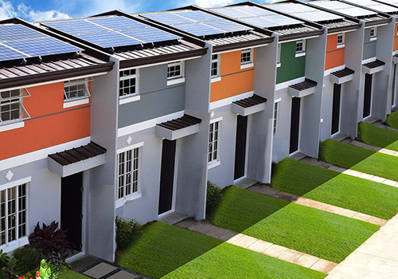
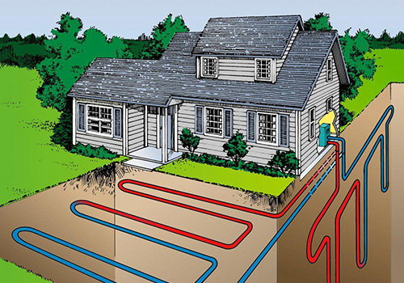
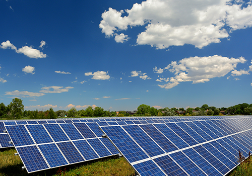

SolarAqua has been established in Ireland by our professional team with more than 10 years experience in designing solar thermal heating systems for the Irish climate.
Solar tube panels and other solar system components
from SolarAqua are among the best solar products available on a nationwide and worldwide scale. We are an authorised installing solar company for the Shentai Solar Group range of
solar products. Shentai Solar Group are one of
the largest manufacturers of solar thermal evacuated tubes collectors and ancillary solar components in the solar thermal market.
Our mission is to supply Irish households with a free solar hot water to help them reduce their water and energy bills throughout a year. Our vision is for Ireland’s energy to be
sustainable, secure, affordable, and clean.
To achieve this, Ireland must use less energy, move to clean energy, and innovate to create new solutions to meet our energy needs. Leading the transition to smarter and more
sustainable energy activities is central to what we do.
Ground Source Heat Pumps use a buried ground loop which extracts heat from the ground and uses it to heat your home. The system does not require any external fuel and is designed to heat a whole building.
Solar Thermal can provide a benefit to your central heating. The benefit is especially dependent on the heat demand of your house. If you are interested in utilizing a solar thermal system to provide space heating support then please contact us.
There are two kinds of heat pumps; air source heat pumps and ground source heat pumps. Ground source heat pumps which use bore holes or thousands of meters of plastic pipe buried in the garden tend to be expensive to install.
